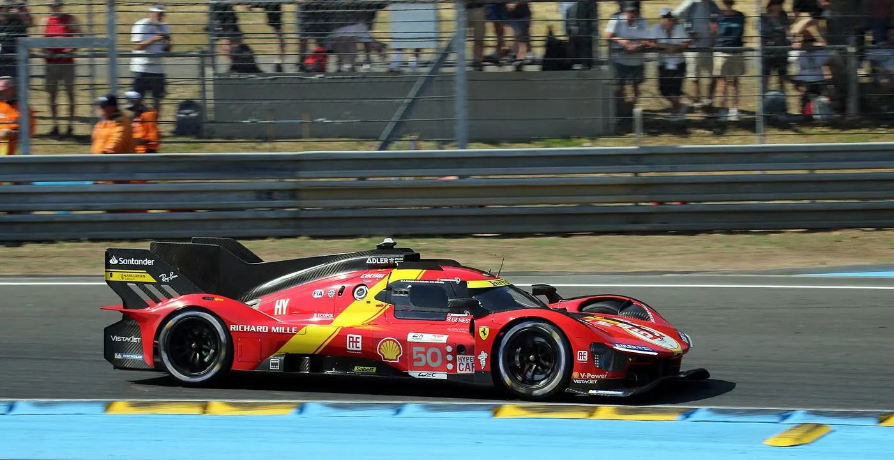
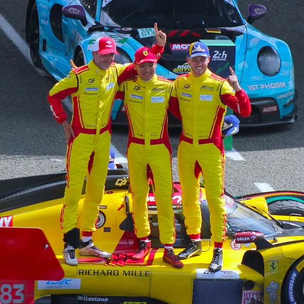
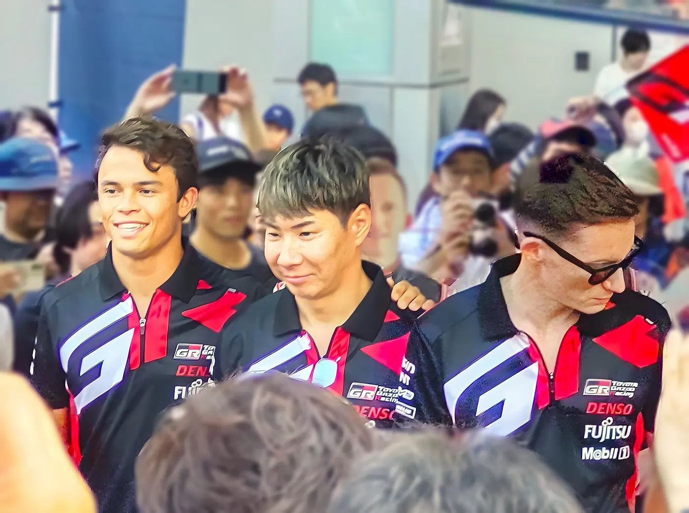
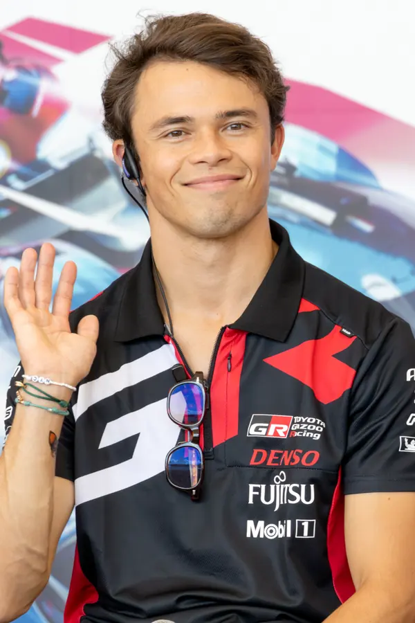

IT
ITAlessandro Pier Guidi
Spécialiste des courses GT avec Ferrari, il gagne au classement général pour le centenaire.
Trois pilotes par voiture, 24 heures de course : voici ceux qui ont gagné les 24 Heures depuis le centenaire.
 IT
ITSpécialiste des courses GT avec Ferrari, il gagne au classement général pour le centenaire.
Fidèle de Ferrari en endurance, déjà vainqueur de sa catégorie au Mans en GT.
Ancien pilote de Formule 1 chez Alfa Romeo, reconverti avec succès en endurance.

 IT
ITPilote Ferrari, réputé pour sa vitesse sur un tour.
Pilote espagnol, longtemps engagé en GT avec Ferrari.
Le Danois apporte à Ferrari sa deuxième victoire de suite, sous la pluie.

Ancien pilote de F1, gravement blessé en rallye en 2011, il réalise un incroyable retour et devient le premier Polonais vainqueur au Mans.
Il devient le premier pilote chinois à remporter les 24 Heures au classement général.
Le Britannique complète l'équipage de la voiture privée victorieuse.

 GB
GBDeuxième victoire au Mans après celle de 2021 avec Toyota.
 JP
JPLui aussi double vainqueur (2021, 2026), il détient le record de la pole position du circuit actuel.

NLChampion de Formule E et ancien pilote de F1, il remporte sa première victoire au Mans.
Le record absolu de victoires, entre 1997 et 2013.
Six victoires entre 1969 et 1982, et une légende de la course.
Cinq victoires entre 1975 et 1987, dont quatre avec Porsche.